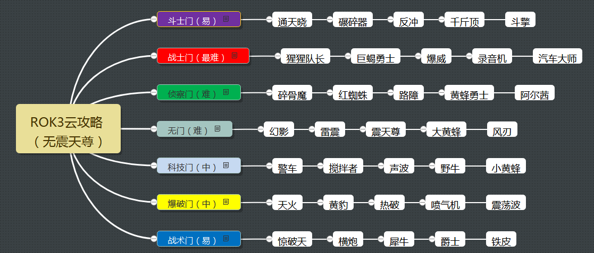

“震天尊出了，赶快去买。”
“我要打了传奇3才能买震天尊！”
“那你去打传奇3啊！”
“没有震天尊我怎么打得了传奇3？！”
——这酷似《第二十二条军规》的情节，就是百炼为战最新的高难度挑战模式给玩家带来的困惑。这个只能带两个人出战，6条线有类别限制，却要面对6个100多万血、100觉醒的敌人的模式，让震天尊这样单兵成团的存在成了最佳解，而本文就是要基于“没有震天尊怎么打传奇3”这个话题来做一番云测。
本人用现有的机器人去测试了几条线路的看门人，找了找感觉。以下“攻略”并非打通传奇3的心得，更多是基于对角色和敌人的了解与分析得来，仅供参考。祝大家都早日拿到震天尊。

斗士门（易）
敌人：通天晓，碾碎器，反冲，千斤顶，斗擎。惊天雷（Boss）
推荐：战威，汽车大师；猩猩队长，黄蜂勇士
斗士门按说应该1号和5号都应该是战术，不知为何5号是斗擎，就让战威可以有三个斗士可打。
- 1号的通天晓是最难的（本来就耐打，还贼狡猾），战威在融合震击和破甲后，要围绕S2来打伤害，因为通天晓肯定物理抗性平时比较多。用黄蜂勇士也可以治得了他。
- 碾碎器、斗擎和千斤顶用谁打都问题不大
- 反冲用战威记得先融减攻，因为反冲的攻实在是太高了。反冲还不好用侧闪反击去打，平时要用点枪确认和点枪拦截的方式发动连击。或者用高容错的汽车大师和猩猩来打。
战士门（最难）
敌人：猩猩队长、巨蝎勇士、爆威、录音机、汽车大师。惊天雷（Boss）
推荐：黄豹，蝎子。
蝎子、爆威和录音机按比例回血极其恐怖，所以黄豹基本上是这三个敌人的通用解。用来开门的战士显然首先长战斗之王蝎子。
这条线的难度相当高，首先前四个都可能会回血
- 猩猩的回血可能没有那么频繁，并且只要自己注意好（黄豹多用S2，见到猩猩放重击后等护甲回来后再打）还是可控的。
- 蝎子想要用黄豹S1封死是不可能的，总会有被他回血的机会。而且蝎子的毒液随着战斗的拉长，总会充满10层，这时被打到和吃到重要都是很要命的。
- 爆威行动规律很清楚，只要把关键的招牌回血封住就行。
- 录音机的S2难躲，在这样漫长的战斗中骗S1为主，但肯定会让他很快充到10个充能，这时录音机的远程伤害，震击伤害和护盾时间都会放大。多利用黄豹的招牌打伤害，争取尽早结束战斗。
- 汽车大师进攻极为凶猛，并且100万血让他的招牌可以分阶段发挥得淋漓尽致。如果为了汽车大师带上一个战术系而不带黄豹，前面几个回血是相当难控制的。
侦察门（难）
敌人：碎骨魔、红蜘蛛、路障、黄蜂勇士、阿尔茜。惊天雷（Boss）
推荐：开门用警车/黄豹，对付碎骨魔用斗擎、惊天雷、铁皮、爆威
碎骨魔配100万血！那感觉真是酸爽。斗士里只有斗擎这样回血稳定并且把流血层数压住（抵抗高觉醒碎骨魔的减攻）的才靠谱，钢锁和猩猩只怕是入不敷出。如果有五星惊天雷当然最好，或者不开暴击精通的铁皮或者爆威。
- 红蜘蛛用警车打应该是沙包一样的角色
- 路障要少击倒他，不管是谁，都用S2来输出
- 黄蜂勇士半血后的战斗难度加大
- 最后的阿尔茜要防止她的小枪打出血崩式的伤害。如果带斗擎，可以用好残血斗擎的S1来打伤害。否则一定要求稳，阿尔茜冷不丁规避一下远程打反击也是很疼的。
中路无门（难）
敌人：幻影、雷震、震天尊、大黄蜂、风刃。惊天雷（Boss）
中路虽然不受人员限制，可并不好打。
- 幻影S1后的小枪是最变态的，用警车牢牢控死他的气是王道，一定要有耐心给自己加到S1再上去摸近战。黄豹可以重击来穿透，但在重击飞到幻影身边时出来了规避被幻影打一套的风险还是很大的。
- 雷震的护甲十分硬，长战斗中被摸到一刀暴击也可能让你之前的闪避都白费。
- 震天尊因为蓝球的存在，变相地把血槽又加长了一大截。但震天尊没有模块加持终归还是好打的，用警车可以控得死死。
- 大黄蜂各种规避，S2难闪，是这条线不确定性最高的。能有效克制规避的漂移应该活不到这么远，热破又难堪大用……真下决心打这条线，一定要把镇静精通开起来。
- 最后的风刃没什么难度。
科技门（中）
敌人：警车、搅拌者、声波、野牛、小黄蜂。惊天雷（Boss）
推荐：救护车，战擎；千斤顶，震荡波；千斤顶、漂移
- 满觉醒警车一旦充气，送你S2的危险性极大，虽然处在被克制状态，但千斤顶的护盾和续航最终可以磨下警车。
- 搅拌者作为游戏一号陪练，就不详细说了
- 满觉醒声波90%的反射，所以震荡波只有S2有用，千斤顶不能上。战擎用流血打法更有效。
- 没有模块的野牛不会造成什么困难
- 最贱的小黄蜂理论上用漂移比较能治，但估计有满锻漂移的不多。用战擎的流血和续航慢慢耗。
爆破门（中）
敌人：天火、黄豹、热破、喷气机、震荡波。惊天雷（Boss）
推荐：惊破天、震荡波。
开门要带爆破，没有震天尊的情况下惊破天是首选，此时搭配震荡波最好。也可以尝试黄豹加某个爆破试试看能不能低消耗过天火，不能就重打。
- 满觉醒的天火把门，黄豹是最佳选择，但由于天火的回血是他自己控制时机的，所以也不能保证100%封住。如果带震荡波来挑战天火，切记不要给天火太多反弹子弹的机会。
- 黄豹作为曾经盟战中最烦人的Boss大家应该也比较熟悉了，侧闪反击要多闪几下，出招牌要躲他远远的。用好惊破天的大伤害，尽早结束战斗
- 满觉醒热破放起S技来跟不要钱似的，震荡波要多打远程相持，吃到充能再震击回去控气。
- 喷气机和震荡波在震荡波面前问题不大。
战术门（易）
敌人：惊破天、横炮、犀牛、爵士、铁皮。惊天雷（Boss）
在没有震天尊的续航下，战术门因为可以用战擎加救护车的续航二人组变得相对容易。
- 救护车虽然输出低，但在战擎被惊破天克的情况下，靠不死小强精神磨掉惊破天是最好的选择，后面铁皮那边也可以把救护车复活了打。其余都是战擎的S3加流血打法。深度创伤一定要多升几阶。
- 主要的麻烦是犀牛的反震，平时注意不要重击撞他，小枪点防时迅速上去拆盾。
- 横炮要多点耐心，并且要连S技时尽量摸一下就连。
- 爵士的S2记得是先侧再后闪。
- 铁皮到S1就坚决骗招，不要被S2坑了。真到了S2，不要试图凌波微步去闪掉5下，该防一两下也得防，保证最后一下闪掉就行。